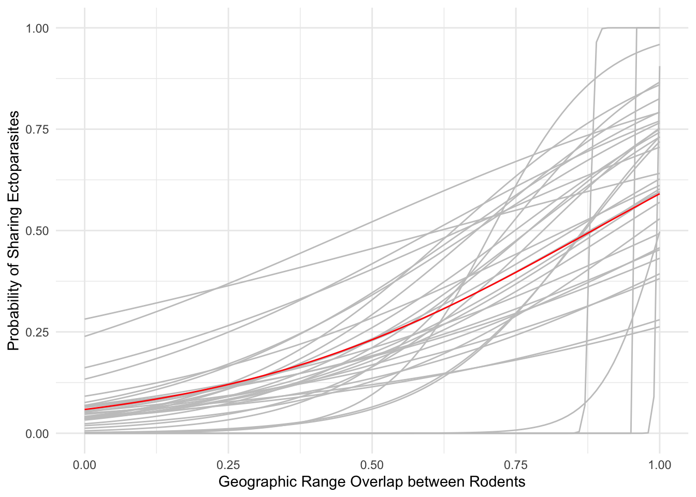
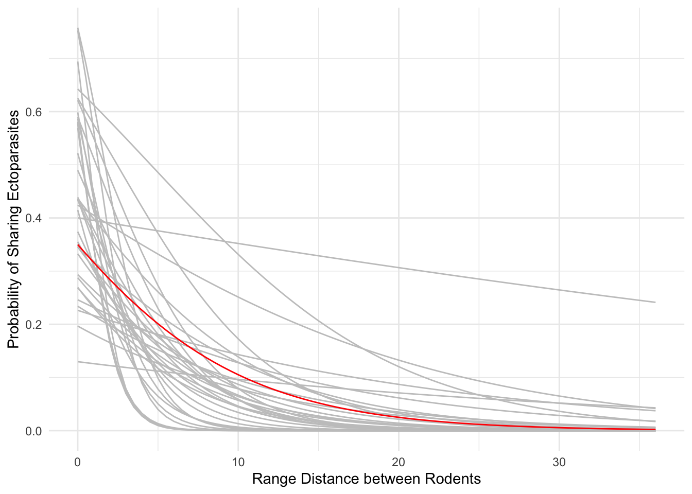

Purpose: Calculate the probability for rodent species to share ectoparasites based on geographic range overlap and distance.
Load packages and files. Calculating the overlap and range distance matrices was done in the map making section.
library(dplyr)
library(geotax)
library(reshape2)
library(ggplot2)
geopairs<- read.csv("./GeoProb/RodPar.csv", header=TRUE) #Rodent-Parasite pairs
geo<- read.csv("./GeoProb/OverlapMatrix.csv", header=TRUE, row.names=1) #range overlap matrix
print(geo[1:3, 1:3])## Ctenomys.maulinus Reithrodon.auritus
## Ctenomys maulinus 1 0.0000000
## Reithrodon auritus 0 1.0000000
## Loxodontomys micropus 1 0.5139376
## Loxodontomys.micropus
## Ctenomys maulinus 0.1722481
## Reithrodon auritus 0.1475845
## Loxodontomys micropus 1.0000000cent <- read.csv("./GeoProb/CentroidDist.csv",header= TRUE, row.names=1) #range centroid distance matrix
print(cent[1:3,1:3])## Ctenomys.maulinus Reithrodon.auritus
## Ctenomys maulinus 0.000000 13.55491
## Reithrodon auritus 13.554908 0.00000
## Loxodontomys micropus 3.493124 10.14777
## Loxodontomys.micropus
## Ctenomys maulinus 3.493124
## Reithrodon auritus 10.147766
## Loxodontomys micropus 0.000000Clean rodent-parasite pairs to only include rodents with geographic range data.
print(geopairs[1:10,1:2]) # preview the data## Parasite Rodent
## 1 Ixodes abrocomae Abrocoma bennetti
## 2 Ixodes abrocomae Abrothrix longipilis
## 3 Ixodes abrocomae Abrothrix olivaceus
## 4 Ixodes abrocomae Phyllotis xanthopygus
## 5 Ixodes sigelos Rattus norvegicus
## 6 Ixodes sigelos Octodon bridgesi
## 7 Ixodes sigelos Phyllotis darwini
## 8 Ixodes sigelos Aconaemys fuscus
## 9 Ixodes sigelos Abrocoma bennetti
## 10 Ixodes sigelos Octodon degusgeopairs<- subset(geopairs, Rodent!="Cavia porcellus" & Rodent!="Ctenomys osgoodi" &
Rodent!="Ctenomys robustus" & Rodent!="Octomys mimax" &
Rodent!="Rattus norvegicus" & Rodent!="Rattus rattus" &
Rodent!= "Ctenomys colburni")Use the GeoTax package to build a binary interaction matrix between rodents and ectoparasites and perform a logistic regression on the entire dataset and for each ectoparasite.
incidence <- get_incidence_matrix(geopairs, returnDataFrame=FALSE) #creates binary interaction matrix
incidence<- incidence[ ,row.names(geo)]
incidence<- subset(incidence, rowSums(incidence)>3 ) #filter to only ectoparasites with more than 3 relationships for logistic regression
colnames(geo)<- row.names(geo)
coef_all <- log_reg_boostrap(incidence, geo, 1000) #logistic regression for the entire dataset
coef <- sapply(1:nrow(incidence), function(x)
log_reg_boostrap(incidence[x, , drop=F], geo, 1000) ) #log reg for each ectoparasite
colnames(coef)<- rownames(incidence)The overall logistic regression coefficients for range overlap 3.1413433 and intercept: -2.7741576.
Now, use the logistic regression coefficients to calculate probability vectors.
GD <- seq(0, 1,0.01 ) #vector on which to calculate probabilities
coefval <- t(coef)[ ,c(1,7)]
coef_allval<- c(coef_all[["intercept"]], coef_all[["slope"]] )
reg <- apply(coefval, 1, function(x) {
prob_logit(x, GD)} ) #calculate probabilities for each ectoparasite
reg_all <- prob_logit(coef_allval, GD) #probabilities for overall datasetThe probability vectors can be used to plot the probability of sharing ectoparasites based on range overlap between rodents. First, the probability vectors need to be combined with the scale for geographic overlap (GD) and then we can plot with ggplot.
plotreg<- cbind(reg, GD)
plotreg<-cbind(plotreg, reg_all)
plotreg<-as.data.frame(plotreg)
preg<- melt(plotreg, id.vars = 'GD', variable.name = 'series')
adj_names <- sort(setdiff(unique(preg$series), "reg_all"))
gg_color_hue <- function(n) {
hues = seq(0, 0, length = n)
hcl(h = hues, l =80, c = 0)[1:n]
}
values <- gg_color_hue(length(adj_names))
names(values)<- adj_names
values<- c(values, c(reg_all="red"))
ggplot(preg, aes(x=GD, y=value, colour=series))+
geom_line(show.legend=F)+ theme_minimal()+
scale_colour_manual(values=values)+
xlab("Geographic Range Overlap between Rodents")+
ylab("Probability of Sharing Ectoparasites")
Now time to look at the geographic distance (#2), doing the same analysis:
incidence2 <- get_incidence_matrix(geopairs, returnDataFrame=FALSE)
incidence2<- incidence2[, row.names(cent)]
incidence2<- subset(incidence2, rowSums(incidence2)>3 )
colnames(cent)<-row.names(cent)
coef_all2 <- log_reg_boostrap(incidence2, cent, 1000)
coef2 <- sapply(1:nrow(incidence2), function(x)
log_reg_boostrap(incidence2[x, , drop=F], cent, 1000) )
colnames(coef2)<- rownames(incidence2)
GD2 <- seq(0, 36, 0.5 )
coefval2 <- t(coef2)[ ,c(1,7)]
coef_allval2<- c(coef_all2[["intercept"]], coef_all2[["slope"]] )
reg2 <- apply(coefval2, 1, function(x) {
prob_logit(x, GD2)} )
reg_all2 <- prob_logit(coef_allval2, GD2)The overall logistic regression coefficients for range distance are -0.152196 and intercept: -0.6194606.
The probability vectors can be used to plot the probability of sharing ectoparasites based geographic range distance between rodents:
plotreg2<- cbind(reg2, GD2)
plotreg2<-cbind(plotreg2, reg_all2)
plotreg2<-as.data.frame(plotreg2)
preg2<- melt(plotreg2, id.vars = 'GD2', variable.name = 'series')
adj_names2 <- sort(setdiff(unique(preg2$series), "reg_all2"))
gg_color_hue <- function(n) {
hues = seq(0, 0, length = n)
hcl(h = hues, l =80, c = 0)[1:n]
}
values2 <- gg_color_hue(length(adj_names2))
names(values2)<- adj_names2
values2<- c(values2, c(reg_all2="red"))
ggplot(preg2, aes(x=GD2, y=value, colour=series))+
geom_line(show.legend=F)+ theme_minimal()+
scale_colour_manual(values=values2)+
xlab("Range Distance between Rodents")+
ylab("Probability of Sharing Ectoparasites")